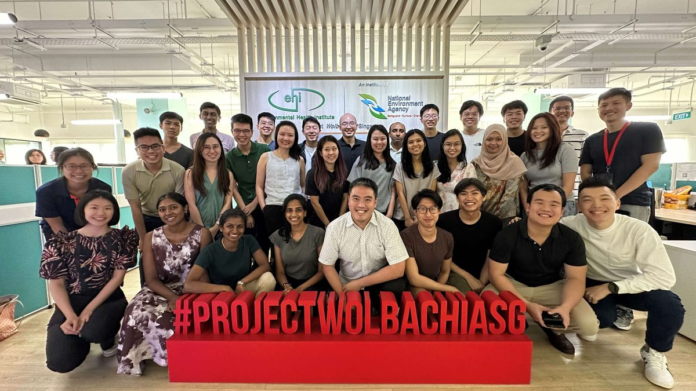

The jobs at the end of the five years.
Two exit pathways, and the posts they lead to across government, the statutory boards, the healthcare clusters and academia.
Where this leads
Posts preventive medicine physicians hold in Singapore, as they appear on an organisation chart.
- Director, Communicable Diseases DivisionMinistry of Health
- Deputy Director, Health Regulation and LicensingMinistry of Health
- Head, Adult Health ProgrammesHealth Promotion Board
- Head, Screening and Immunisation ProgrammesHealth Promotion Board
- Senior Consultant, Occupational Safety and Health DivisionMinistry of Manpower
- Senior Medical Officer, Home Team Medical ServicesMinistry of Home Affairs
- Head, Preventive Medicine BranchSingapore Armed Forces
- Director, Population HealthNational Healthcare Group
- Head, Regional Health System PlanningSingHealth
- Director, Infection Prevention and ControlNational University Health System
- Assistant Professor, Saw Swee Hock School of Public HealthNational University of Singapore
- Technical Officer, Health EmergenciesWorld Health Organization Regional Office for the Western Pacific
Indicative posts, not a vacancy list and not a promise of placement. Titles are given to show the level and the kind of remit a preventive medicine physician carries, and are drawn only from the organisations that participate in the programme, plus academia and the regional office of the World Health Organization.
Who employs preventive medicine physicians
Six settings, and the work each of them involves.
- Government ministries
- Ministry of Health, Ministry of Manpower, Ministry of Home Affairs and the Singapore Armed Forces. You write the rule rather than apply it: disease control policy, permissible workplace exposure standards, health financing, and the legislation and licensing conditions that carry them.
- Statutory boards
- Principally the Health Promotion Board. Designing and running national programmes — screening, immunisation, nutrition labelling, behavioural intervention — and then measuring honestly whether they moved anything.
- Healthcare clusters
- National Healthcare Group, SingHealth and the National University Health System. Population health at cluster scale: infection prevention and control, care integration across the region a cluster is accountable for, and the data infrastructure underneath both.
- Academia
- The NUS Saw Swee Hock School of Public Health and its research groups. Teaching and research appointments, usually held jointly with a service post rather than instead of one.
- International organisations
- The World Health Organization Regional Office for the Western Pacific and comparable bodies. Technical posts on outbreak response, health systems and regional standards; commonly taken mid-career, often on secondment rather than as a permanent move.
- Private sector and industry
- Large employers, insurers and multinationals with a Singapore workforce. Occupational health across a whole population of workers: exposure assessment, fitness-to-work determinations, surveillance and workplace health programmes.

Descriptions of the work in each setting, written by the Programme Office. The eight participating organisations are as published by NUHS. Secondment to an international organisation is normally taken after accreditation rather than during training. The photograph shows a statutory board team at work; the people in it are not identified, and it is not claimed that any of them trained on this programme.
Where our graduates work
Every graduate since 2011, by the sector employing them now.
| Sector | Graduates |
|---|---|
| Government ministries | 11 of 38 |
| Healthcare clusters | 9 of 38 |
| Statutory boards | 6 of 38 |
| Academia | 4 of 38 |
| Private sector and industry | 4 of 38 |
| International organisations | 2 of 38 |
| Not traced | 2 of 38 |
Source: Programme Office records and alumni tracing, 2011–2026 intakes. The same 38 graduates and the same 36 of 38 traced to a current post are published on the homepage. A graduate holding a joint service and academic appointment is counted once, against the service post. Last verified 1 August 2026 by the Programme Office. Graduates working outside Singapore are counted against the sector employing them.
Reach and network
Two features of the work that are not obvious from outside the specialty.
The reach
One decision taken at a ministry desk touches more people than a full clinical career. Nutri-Grade grading changed what sits on the shelf in every supermarket in Singapore, and from the middle of 2027 it extends to salt, sauces, seasonings, instant noodles and cooking oil. The national childhood immunisation schedule covers vaccination against fourteen diseases for every child born here. Permissible noise exposure limits govern every factory floor. None of the people affected ever met a physician, and all of them were treated.
The network
Residents rotate through eight organisations. By the end of the five years you have worked inside government ministries, a statutory board, the uniformed services and all three healthcare clusters, and you know the people who run them. Very few doctors in Singapore hold that map, and it is difficult to build any other way.
Nutri-Grade (in force from 30 December 2022, extending to sodium and saturated fat from mid-2027), the national childhood immunisation schedule and permissible noise exposure limits are real Singapore public health instruments, cited here as examples of the field's reach, not as outputs of this programme. Sources: Ministry of Health, the Communicable Diseases Agency and the Ministry of Manpower. The eight participating organisations are as named on the NUHS programme page.
Applications for the July 2027 intake
Applications are made through the MOH Holdings eResidency portal. Registering to be interviewed by NUHS as Sponsoring Institution is a separate step, and it stays open eight days longer than the portal does — but the portal cannot be reopened or extended, so the portal is the deadline that ends your cycle.
eResidency portal: 1 to 24 September 2026.
Interview registration with NUHS: 1 September to 2 October 2026.
Apply for the July 2027 intake eResidency portal opens 1 September 2026
Not ready to apply? Write to A/Prof Jason Yap, Programme Director, at jasonyap@nus.edu.sg.
Contact
Three ways to reach the programme. The Programme Office can also put you in touch with a current resident.
Ask a current resident
For questions about the training itself, and what the five years are like day to day.
Ask to speak with a current resident
Programme Director
A/Prof Jason Yap
jasonyap@nus.edu.sg
Programme Office
Ms Fanny Yik
fanny_fl_yik@nuhs.edu.sg
Ms Reena Riana
Reena_Riana_Bte_Jamil@nuhs.edu.sg
Programme Director and coordinator addresses as published on the NUHS programme page. General NUHS residency enquiries go to residency@nuhs.edu.sg. The Programme Office aims to reply within five working days.